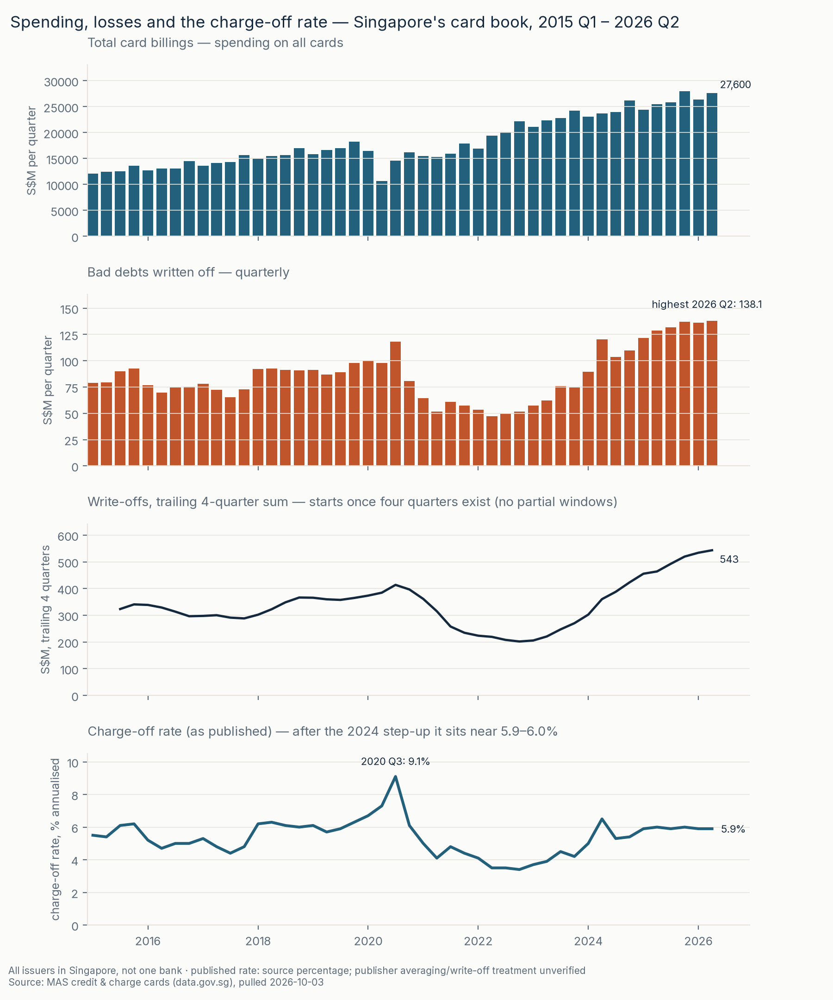
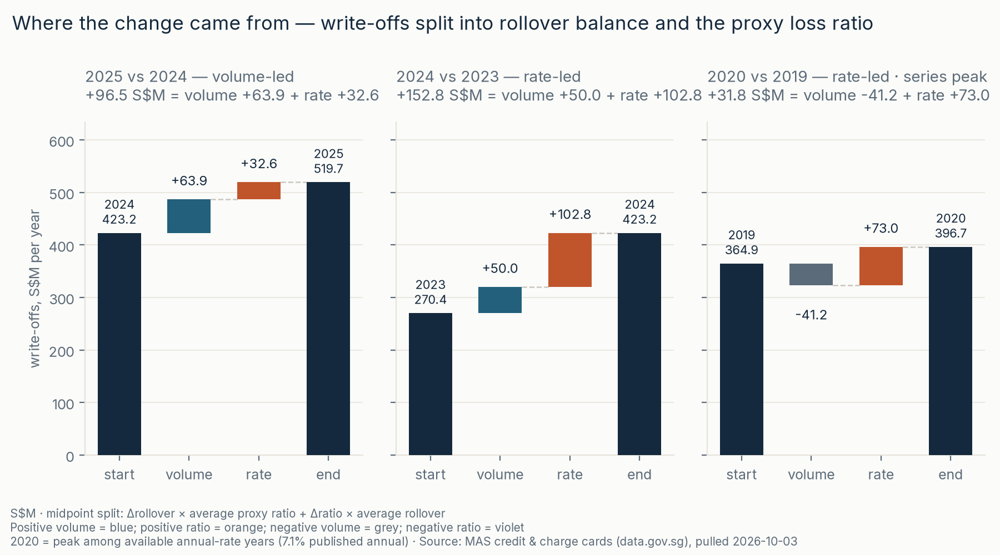
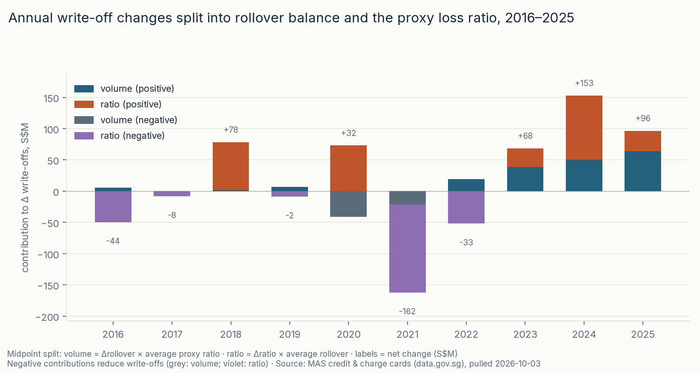
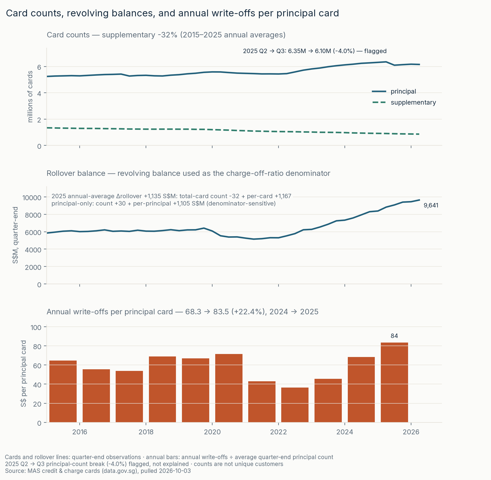

MAS credit & charge cards via data.gov.sg · all issuers in Singapore, not one bank
Higher card write-offs: more balance, or a higher loss ratio?
2025 write-offs rose S$96.5 million. An arithmetic split assigns S$63.9 million to higher revolving balances and S$32.6 million to a higher recomputed loss ratio. The larger ratio increase happened in 2024; the published quarterly rate then stayed at 5.9–6.0% from 2025 Q1 through 2026 Q2.
Balance growth is not automatically healthy expansion or confirmed stress: spending and slower repayment can both raise balances. Average reported total cards fell 0.4% while aggregate rollover balance per reported card rose 15%; unique customers cannot be measured, and the per-card proxy includes non-revolving cards. A ratio change does not isolate credit quality.
Fixed historical snapshot: pulled 2026-10-03, quarterly coverage 2014 Q4–2026 Q2. Text is maintained manually, not automatically refreshed. Repository, code and full method.

More views









outputs/quick_check.xlsx · frozen release downloads (may differ from the working tree).
Method
What I did — Hermes-assisted: Hermes implemented the pipeline and presentation; Faiz approved the question, comparison years, decomposition method and wording at the review gate. The work demonstrates SQL staging, metric definitions, arithmetic decomposition, reconciliation and communication of limits, not unaided coding.
Our recomputed proxy ratio is summed annual write-offs divided by the average of four quarter-end balances. Agreement with published annual rates is empirical, not proof of identical denominators. A published-rate substitution changes the balance term −0.3507 and ratio term +0.8124 S$M, leaving a separate −0.46175 basis-and-rounding residual. H1-vs-H1 is same-season, not seasonality-free.
- Pull — MAS credit & charge cards from data.gov.sg; structure-validated before replacing files, SHA-256 + coverage in a manifest (2014 Q4 → 2026 Q2). src/download.py
- Audit — manually maintained, based on independent raw-file evidence: flows, stocks and proxy-rate reconciliation. Current publisher definition notes remain a retrieval gap; the audit records what was and was not retrieved. docs/data_audit.md
- Stage & check — the wide raw file unpivots to one tidy row per quarter; dataset checks run before dataset publication. The complete runner stages and validates before publication; stage failures preserve outputs and ordinary publication exceptions roll back. Individual scripts do not provide whole-run rollback. Single writer only; swaps are not crash/power-loss atomic. sql/01 · sql/03
- Measure & bridge — complete years only; the change in write-offs splits into volume (Δrollover × avg rate) + rate (Δrate × avg rollover), midpoint weights; the balance change splits further into cards −32 + balance-per-card +1,167 S$M. src/analysis.py → yearly_bridge.csv · book_split.csv
- Draw, write, check — four figures as code, light and dark (src/figures.py); then the decision memo and the Excel quick-check with live bridge formulas.
Reproduce
git clone https://github.com/faizsaifulnizam/card-book-quality && cd card-book-quality
uv venv .venv --python 3.12 --seed # seed pip; or: python -m venv .venv
source .venv/bin/activate # Windows: .venv\Scripts\activate
python -m pip install --require-hashes -r requirements.lock
python src/run_all.py # vendored inputs: no data-fetch network requiredSee README for individual stages. The dependency lock fully resolves packages with hashes; optional lxml backend coverage applies only when available. Check the 2025 CSV row: +96.5 = +63.9 + +32.6. Workbook default inputs (2026 Q2) are write-offs 138.1, full-window sum 543.4 and published-rate change −0.1 pt; formula-input checks do not prove Excel evaluation. Refreshes require review of annual-source overlap, historical metadata and maintained text. No figure hash-check or live-CI success is asserted here.
Read more
- The repository — README carries the full method, rules, and caveats
- Decision memo · Sensitivity checks · Data audit
- Release — the Excel quick-check workbook